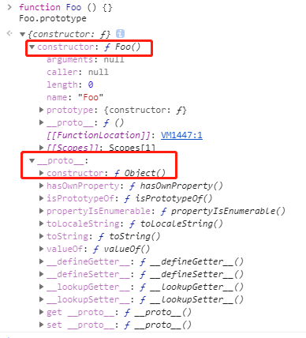
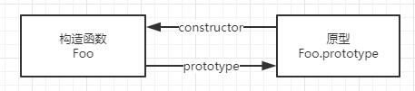
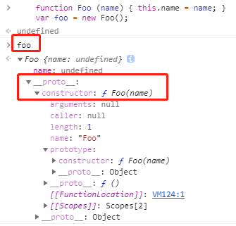
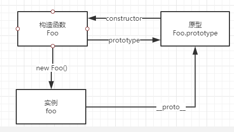
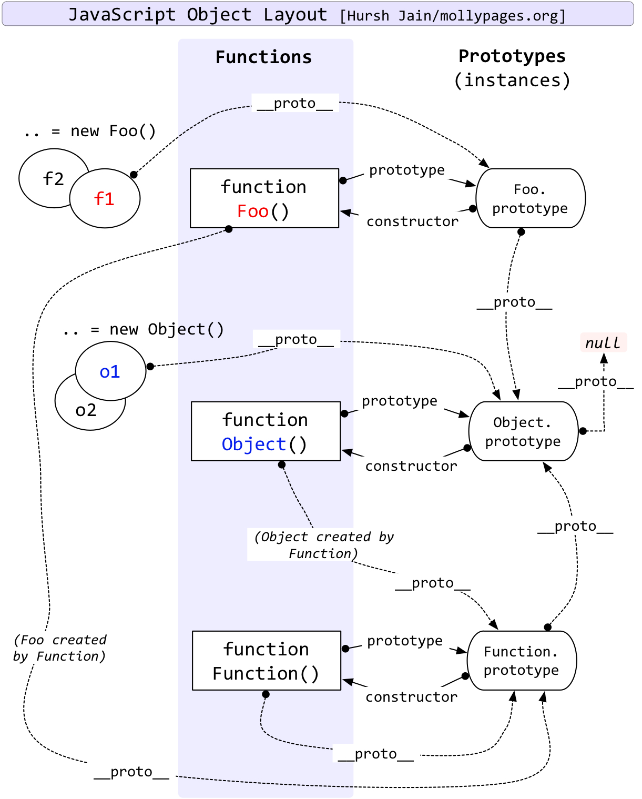
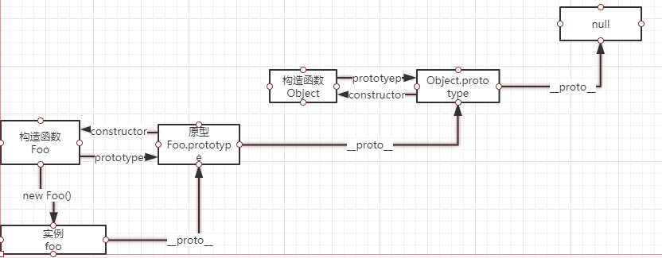

大方無隅，大器晚成，大音希聲，大象無形。——《道德經》
JavaScript原型系列（一）构造函数、原型和原型链
JavaScript原型系列（二）什么是原型继承
JavaScript原型系列（三）Function、Object、Null等等的关系和鸡蛋问题
简介
首先要了解几个属性constructor、prototype、[[prototype]]、__proto__分别作用是什么，还要理解几个概念原型、原型链、构造函数。
结合代码先把上面的的属性和记录清楚。
构造函数
constrcutor是一种用于创建和初始化class创建的对象的特殊方法。构造函数本身就是一个函数，与普通函数没有任何区别，不过为了规范一般将其首字母大写。构造函数和普通函数的区别在于，使用 new 生成实例的函数就是构造函数，直接调用的就是普通函数。下面示例代码：
1 | function ConstructorFun (name) { |
其实ConstructorFun就是一个普通函数，但是在通过new关键字生成实例的时候，就可以把这个函数叫做构造函数;
constructor
除了null、undefined其他无论是通过new生成的实例，还是通过字面量生成的变量，普通的函数都是有constructor属性的。
代码如下：
1 | function ConstructorFun (name) { |
构造函数扩展
let a = {}其实是let a = new Object()的语法糖let a = []其实是let a = new Array()的语法糖function Foo(){ … } 其实是 var Foo = new Function(…)- 可以使用
instanceof判断一个函数是否为一个变量的构造函数
手动实现一个instanceof函数如下：
1 | // 模拟实现instanceof |
constructor 的值是否可更改
对于引用类型来说constructor 属性值是可以修改的，但是对于基本类型来说是只读的。
注意：
null和undefined是没有constructor属性的。
原型
官方解释原型：”JavaScript常被描述为一种基于原型的语言（prototype-based language）————每个对象拥有一个原型对象，对象以其原型为模板、从原型继承方法和属性。”
每个函数都有一个特殊的属性就叫作原型（prototype），请看下面代码：
1 | function Foo () {} |
效果如下图所示：
Foo.prototype上有两个属性，一个是constructor它指向了函数本身；另一个是__proto__它指向了Object.prototype。
构造函数Foo有一个指向原型的指针，原型Foo.prototype有一个指向构造函数的指针Foo.prototype.constructor，用下面的图来表示更清晰一点：

其实更重要的是任何一个prototype对象都有一个constructor属性，指向这个构造函数。
proto
在上面看到__proto__这个属性，每个实例对象（object）都有一个隐式原型属性(称之为__proto__)指向了创建该对象的构造函数的原型。
1 | function Foo (name) { this.name = name; } |
效果图如下：

当通过new Foo()生成的实例对象foo，它有一个__proto__属性指向Foo.prototype，可以通过以下代码验证：
1 | foo.__proto__ === Foo.prototype; // true |
Foo、Foo.prototype、Foo.prototype.constructor、foo.__proto__三者的关系如下图所示：

__proto__ 属性在 ES6 时才被标准化，以确保 Web 浏览器的兼容性，但是不推荐使用，除了标准化的原因之外还有性能问题。为了更好的支持，推荐使用 Object.getPrototypeOf()。
通过改变一个对象的
[[Prototype]]属性来改变和继承属性会对性能造成非常严重的影响，并且性能消耗的时间也不是简单的花费在obj.__proto__ = ...语句上, 它还会影响到所有继承自该[[Prototype]]的对象，如果你关心性能，你就不应该修改一个对象的[[Prototype]]。
如果要读取或修改对象的 [[Prototype]] 属性，建议使用如下方案，但是此时设置对象的 [[Prototype]] 依旧是一个缓慢的操作，如果性能是一个问题，就要避免这种操作。
1 | // 获取 |
如果要创建一个新对象，同时继承另一个对象的 [[Prototype]] ，推荐使用 Object.create()。
1 | function Parent() { |
[[Prototype]]
[[Prototype]] 是对象的一个内部属性，外部代码无法直接访问。
遵循 ECMAScript 标准，
someObject.[[Prototype]]符号用于指向 someObject 的原型
原型链
每个对象拥有一个原型对象，通过 __proto__ 指针指向上一个原型 ，并从中继承方法和属性，同时原型对象也可能拥有原型，这样一层一层，最终指向 null。这种关系被称为原型链 (prototype chain)，通过原型链一个对象会拥有定义在其他对象中的属性和方法。看一面一张经典的图可能更直观：

看一下面的代码：
1 | function Foo () {} |
下面的图可以很好的展示上面的代码prototype和__proto__指向问题。

特殊的Symbol
Symbol是基础数据类型，它可以通过Symbol(123)生成实例，不能通过new Symbol()生成实例，Symbol不是构造函数，但是它有constructor属性。
1 | let sSymbol = Symbol('symbol'); |
总结
- 每一个函数对象都有一个
prototype属性，指向函数对象的原型，原型对象上有一个constructor属性指向构造函数本身。 - 引用类型
constructor属性值是可以修改的，但是对于基本类型来说是只读的，当然null和undefined没有constructor属性。 __proto__属性在ES6时被标准化，但因为性能问题并不推荐使用，推荐使用Object.getPrototypeOf()。__proto__是每个实例上都有的属性，prototype是构造函数的属性，在实例上并不存在，所以这两个并不一样，但foo.__proto__和Foo.prototype指向同一个对象。- 每个对象拥有一个原型对象，通过
__proto__指针指向上一个原型 ，并从中继承方法和属性，同时原型对象也可能拥有原型，这样一层一层，最终指向null，这就是原型链。